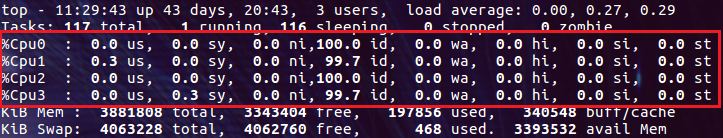
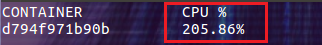
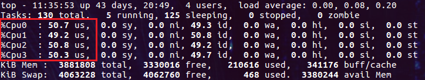
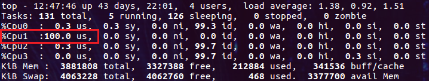
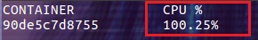
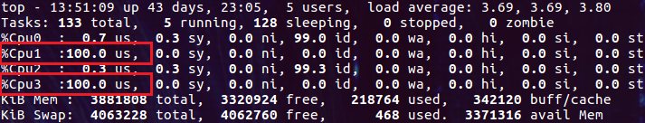
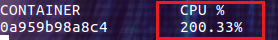
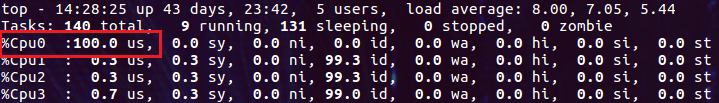
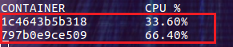

默认情况下，容器可以使用的宿主机 CPU 资源是不受限制的。和内存资源的使用一样，如果不对容器可以使用的 CPU 资源进行限制，一旦发生容器内程序异常使用 CPU 的情况，很可能把整个主机的 CPU 资源耗尽，从而导致更大的灾难。本文将介绍如何限制容器可以使用的 CPU 资源。
本文的 demo 中会继续使用之前创建的 u-stress 镜像进行压力测试，文中就不再过多解释了。
限制可用的 CPU 个数
在 Docker 1.13 及更高的版本上，能够很容易地限制容器可以使用的主机 CPU 个数。只需要通过 --cpus 选项指定容器可以使用的 CPU 个数就可以了，并且还可以指定如 1.5 之类的小数。接下来我们在一台有四个 CPU 且负载很低的主机上进行 demo 演示。

通过下面的命令创建容器，--cpus=2 表示容器最多可以使用主机上两个 CPU：
docker run -it --rm --cpus=2 u-stress:latest /bin/bash然后由 stress 命令创建四个繁忙的进程消耗 CPU 资源：
stress -c 4我们先来看看 docker stats 命令的输出：

容器 CPU 的负载为 200%，它的含义为单个 CPU 负载的两倍。我们也可以把它理解为有两颗 CPU 在 100% 地为它工作。
再让我们通过 top 命令看看主机 CPU 的真实负载情况：

哈哈，有点大跌眼镜！实际的情况并不是两个 CPU 负载 100%，而另外两个负载 0%，而是四个 CPU 的负载都是 50%，加起来容器消耗的 CPU 总量就是两个 CPU 100% 的负载。
看来对于进程来说是没有 CPU 个数这一概念的，内核只能通过进程消耗的 CPU 时间片来统计出进程占用 CPU 的百分比。这也是我们看到的各种工具中都使用百分比来说明 CPU 使用率的原因。
严谨起见，我们看看 Docker 的官方文档中是如何解释 --cpus 选项的：
Specify how much of the available CPU resources a container can use.
果然，人家用的是 “how much”，不可数的！并且 --cpus 选项支持设为小数也从侧面说明了对 CPU 的计量只能是百分比。
看来笔者在本文中写的 “CPU 个数” 都是不准确的。既然不准确，为什么还要用？当然是为了容易理解。况且笔者认为在 --cpus 选项的上下文中理解为 “CPU 个数” 并没有问题（--cpus 选项的设计初衷也是要表示 CPU 个数的）。
虽然 --cpus 选项用起来很爽，但它毕竟是 1.13 才开始支持的。对于更早的版本，完成同样的功能我们需要配合使用两个选项：--cpu-period 和 --cpu-quota（1.13 及之后的版本仍然支持这两个选项）。下面的命令实现相同的结果：
docker run -it --rm --cpu-period=100000 --cpu-quota=200000 u-stress:latest /bin/bash这样的配置选项是不是让人很傻眼呀！100000 是什么？200000 又是什么？它们的单位是微秒，100000 表示 100 毫秒，200000 表示 200 毫秒。它们在这里的含义是：在每 100 毫秒的时间里，运行进程使用的 CPU 时间最多为 200 毫秒（需要两个 CPU 各执行 100 毫秒）。
要想彻底搞明白这两个选项，可以参考内核文档中的 CFS Bandwidth Control。我们要知道这两个选项才是事实的真相，但是真相往往很残忍！还好 --cpus 选项成功地解救了我们，其实它就是包装了 --cpu-period 和 --cpu-quota。
指定固定的 CPU
通过 --cpus 选项我们无法让容器始终在一个或某几个 CPU 上运行，但是通过 --cpuset-cpus 选项却可以做到！这是非常有意义的，因为现在的多核系统中每个核心都有自己的缓存，如果频繁地调度进程在不同的核心上执行，势必会带来缓存失效等开销。
下面我们就演示如何设置容器使用固定的 CPU。下面的命令为容器设置了 --cpuset-cpus 选项，指定运行容器的 CPU 编号为 1：
docker run -it --rm --cpuset-cpus="1" u-stress:latest /bin/bash再启动压力测试命令：
stress -c 4然后查看主机 CPU 的负载情况：

这次只有 Cpu1 达到了 100%，其它的 CPU 并未被容器使用。我们还可以反复地执行 stress -c 4 命令，但是始终都是 Cpu1 在干活。
再看看容器的 CPU 负载，也是只有 100%：

--cpuset-cpus 选项还可以一次指定多个 CPU：
docker run -it --rm --cpuset-cpus="1,3" u-stress:latest /bin/bash这次我们指定了 1、3 两个 CPU，运行 stress -c 4 命令，然后检查主机的 CPU 负载：

Cpu1 和 Cpu3 的负载都达到了 100%。
容器的 CPU 负载也达到了 200%：

--cpuset-cpus 选项的一个缺点是必须指定 CPU 在操作系统中的编号，这对于动态调度的环境（无法预测容器会在哪些主机上运行，只能通过程序动态地检测系统中的 CPU 编号，并生成 docker run 命令）会带来一些不便。
设置使用 CPU 的权重
当 CPU 资源充足时，设置 CPU 的权重是没有意义的。只有在容器争用 CPU 资源的情况下，CPU 的权重才能让不同的容器分到不同的 CPU 用量。
--cpu-shares 选项用来设置 CPU 权重，它的默认值为 1024。我们可以把它设置为 2 表示很低的权重，但是设置为 0 表示使用默认值 1024。
下面我们分别运行两个容器，指定它们都使用 Cpu0，并分别设置 --cpu-shares 为 512 和 1024：
docker run -it --rm --cpuset-cpus="0" --cpu-shares=512 u-stress:latest /bin/bash
docker run -it --rm --cpuset-cpus="0" --cpu-shares=1024 u-stress:latest /bin/bash在两个容器中都运行 stress -c 4 命令。
此时主机 Cpu0 的负载为 100%：

容器中 CPU 的负载为：

两个容器分享一个 CPU，所以总量应该是 100%。具体每个容器分得的负载则取决于 --cpu-shares 选项的设置！我们的设置分别是 512 和 1024，则它们分得的比例为 1:2。在本例中如果想让两个容器各占 50%，只要把 --cpu-shares 选项设为相同的值就可以了。
总结
相比限制容器用的内存，限制 CPU 的选项要简洁很多。但是简洁绝对不是简单，大多数把复杂东西整简单的过程都会丢失细节或是模糊一些概念，比如从 --cpu-period 和 --cpu-quota 选项到 --cpus 选项的进化。对于使用者来说这当然是好事，可以减缓我们的学习曲线，快速入手。